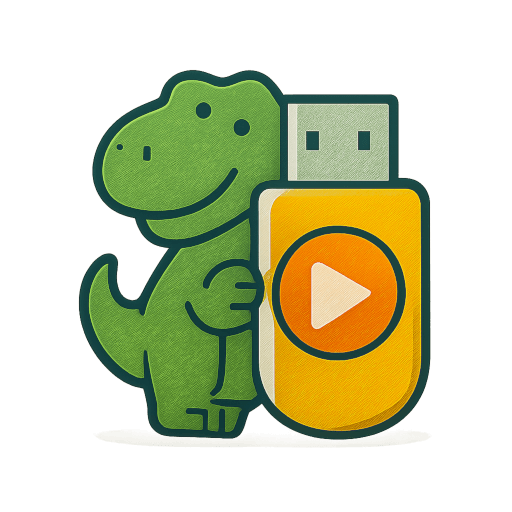

Turn your Roku TV into a USB video player. Connect a USB drive, browse videos from folders and subfolders, and enjoy full-screen playback with subtitles, resume support, quick seek controls, restart, and a clean Roku remote-friendly interface.
Install Dino USB Player on your Roku device.
Attach a USB storage device with compatible video files to your Roku device.
Let the app scan your drive, choose a video from the USB browser, then use the full-screen player for play, pause, quick seek, subtitles, restart, and resume.
Play compatible movies from a USB drive on your Roku TV.
Watch family videos, clips, and personal recordings on the big screen.
Keep videos on a local USB drive and browse them from the couch.
Use subtitle files stored next to your videos for easier viewing.
Dino USB Player is a Roku app for browsing and playing videos from an attached USB drive.
Yes. Dino USB Player is built around videos stored on a USB storage device connected to your Roku.
The visible browser lists video files only. Folders are scanned in the background so videos inside subfolders can still appear.
Yes. Supported subtitle files in the same folder can be detected and offered in the video player.
Yes. Dino USB Player saves playback progress and can resume supported videos from where you left off.
Free users can open the first filename-sorted video. Videos after the free item require a subscription.
Subscribed users can use Manage Subscription in the app, visit https://my.roku.com/subscriptions, or manage the app subscription from the Roku Home screen.
Download Dino USB Player and turn your Roku into a simple, remote-friendly USB video player for movies, home videos, and personal recordings.